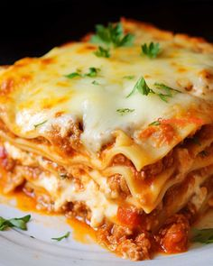

Lasagna

Ingrediente:
- Foi de lasagna
- Carne tocata
- Branza ricotta
- Pasta de rosii
- Parmezan ras
Mod de preparare:
- Gateste carnea tocata cu pasta de rosii si condimente.
- Aseaza straturi de foi de lasagna, carne si branza intr-o tava.
- Coace in cuptor pentru 40 de minute la 180°C.
Valori nutritionale per portie:
| Nutrient |
Valoare |
| Calorii |
450 kcal |
| Proteine |
25 g |
Vezi rețeta originală de Lasagna aici